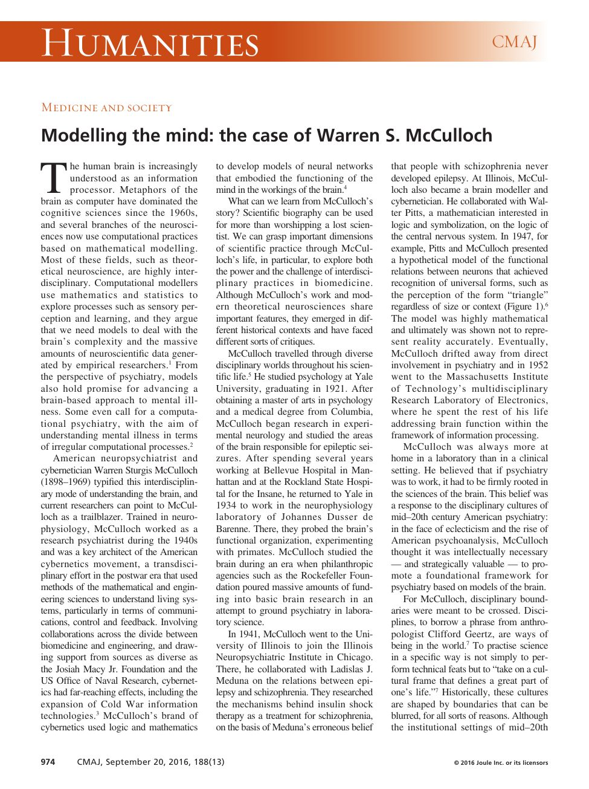
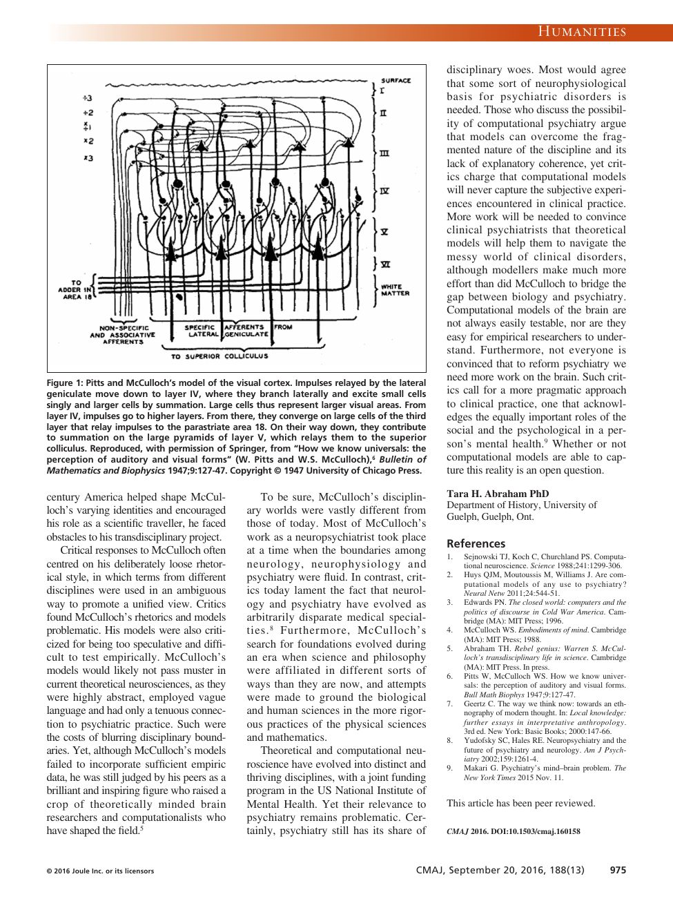

Canadian Medical Association Journal · 188(13) · 2016
Modelling the MindThe case of Warren S. McCulloch
A historian asks what McCulloch's career can teach us about interdisciplinary science. The answer is not a hero story. It is a precise account of the power and the cost of crossing boundaries — and of why a model can be brilliant, influential, and empirically wrong at the same time.
Read the companionThe thesis
A model can be fertile and wrong at the same time.
Abraham's essay is a scientific biography with an argument. McCulloch is a trailblazer of the computational brain: he used logic and mathematics to model neural networks that embodied the mind in the workings of the brain. But his models were highly abstract, rhetorically loose, and only tenuously connected to psychiatric practice. They would not pass muster in current theoretical neuroscience.
That is not a debunking. It is a lesson about interdisciplinary work. Crossing boundaries produces reach and insight; it also produces vagueness, untestability, and a gap between model and clinic. McCulloch's career shows both sides at once. The question for computational psychiatry today is whether it can keep the reach while paying the price.
The phrase to keep: disciplines, to borrow from Clifford Geertz, are “ways of being in the world.” To practise science is not just to perform technical feats; it is to take on a cultural frame.
Laboratory 01 · the scientific traveller
Psychology, medicine, neurology, psychiatry, cybernetics, computation.
McCulloch did not stay in one discipline. Move the year and follow the route: Yale psychology, Columbia medicine, Bellevue neurology, Rockland psychiatry, Yale neurophysiology, Illinois neuropsychiatry, MIT information processing. At each stop he carried something across a boundary.
Disciplines as territories
The path is not a career ladder; it is a sequence of borrowed methods and borrowed questions. The readout names what he carried from one world to the next.
stationIllinois · 1941
disciplineNeuropsychiatry / cybernetics
carriedlogic + physiology + psychiatry
Illinois Neuropsychiatric Institute; Pitts, Meduna, insulin shock, the logical calculus.
Laboratory 02 · the transdisciplinary dial
Reach rises. Testability falls.
This is the essay's central tension in one picture. Cross boundaries and the reach of the model grows — new questions, new methods, new audiences. Cross too far and the model becomes hard to test, easy to misread, and difficult to connect to clinical practice. McCulloch lived in the far zone.
What blurring boundaries buys — and costs
Move the dial. The curves are schematic, not measurements: they make the trade-off visible. The shaded zone is where McCulloch's models lived.
reach / insight0.93
testability / rigor0.42
verdictMcCulloch country
The voice
The power and the cost, in the same paragraph.
“McCulloch's brand of cybernetics used logic and mathematics to develop models of neural networks that embodied the functioning of the mind in the workings of the brain.”
“The model was highly mathematical and ultimately was shown not to represent reality accurately.”
“Critical responses to McCulloch often centred on his deliberately loose rhetorical style, in which terms from different disciplines were used in an ambiguous way to promote a unified view.”
“McCulloch's models would likely not pass muster in current theoretical neurosciences, as they were highly abstract, employed vague language and had only a tenuous connection to psychiatric practice. Such were the costs of blurring disciplinary boundaries.”
“Yet, although McCulloch's models failed to incorporate sufficient empiric data, he was still judged by his peers as a brilliant and inspiring figure who raised a crop of theoretically minded brain researchers and computationalists who have shaped the field.”
“To practise science in a specific way is not simply to perform technical feats but to ‘take on a cultural frame that defines a great part of one's life.’”
The article itself
Pages from 2016
click to enlarge


Secondary source · peer-reviewed history of science · CMAJ 2016;188(13):974–975 · DOI 10.1503/cmaj.160158 · PMCID PMC5026519.
Why it matters
A mirror for the present.
Computational psychiatry is now a real programme, with its own funding, methods, and critics. It faces the same questions McCulloch faced: how to build a model that is both mathematically serious and clinically useful; how to test a model of a mind; how to talk across the divide between biology, engineering, and the clinic without losing precision.
Abraham's essay is valuable because it refuses both hero worship and debunking. McCulloch's models were wrong in important ways. They were also generative. The task is not to choose between those facts but to understand the practice that produced both.
Read next: the primary plates, especially How We Know Universals — the 1947 model whose fate Abraham describes.